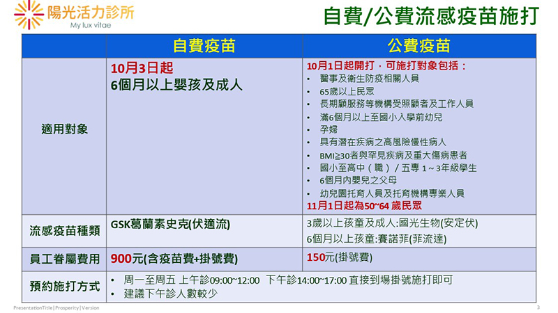

| 維持規律睡眠習慣、攝取健康飲食以及補充多種維生素 |
當人們對新冠病毒愈來愈焦慮的同時，能保護身體免受現代瘟疫侵襲的詐騙術也如影隨形，例如今年初美國某家公司吹捧「銀離子可殺死新冠病毒」。嗯，這是錯的！想提升免疫力對抗新冠病毒與各種感染，沒有神奇處方，但有一些方法具有科學根據，可維持免疫系統健康。
1.不要吸菸：吸菸者的呼吸道容易受到感染。
2.食用各式蔬果與健康飲食，攝取均衡營養。哈佛大學教授Wafaie Fawzi説:「健康飲食可減少感染 風險，並降低感染的嚴重程度。」 3.維持良好的睡眠習慣，增加每天晚上充足休息的機會。
4.保持規律運動，有助一夜好眠。 |
 |
飲食中某些營養成份可提升抵抗病毒的能力，舉例來説，礦物質鋅能降低呼吸道感染以及縮短相關症狀的病程；維生素C與D也有助抵抗呼吸道感染。與新冠病毒可能的關聯是，維生素C可降低自身免疫反應對組織造成的傷害。至於維生素D，可降低急性呼吸道感染的風險，尤其是美國約40%的人口缺乏維生素D，因為維生素D的來源主要透過日光照射皮膚，美國在去年冬天今年春天新冠肺炎剛開始流行時，也剛好是人容易缺乏維生素D的時候。同時，WafaieFawzi教授建議補充多種基本維生素，除了均衡飲食外，每日補充維生素鋅礦物質，對容易營養不足的年長者或許特別有幫助。
至於睡眠，科家早已知道睡眠在增強抵抗力上扮演關鍵角色。德國杜賓根大學神經科學家Luciana Besedovsky解釋，睡眠會促進T細胞移轉到淋巴結，在此呈現外來分子並製造抗體。類似研究追蹤了57000名女性，發現四年內睡眠五小時以下的人，得肺炎的機率比睡足八小時的人高出40%。Besedovsky説：「長期失眠可能形成一種慢性炎狀態，似乎會耗弱免疫系統，導致無法有效對抗感染。」努力維持規律睡眠習慣、攝取健康飲食以及補充多種維生素，並不能保證不會感染新冠病毒，但這些方法的確提供了一線希望，協助度過可能到來的任何健康威脅。 |
|
| -------------------------------------------------------------------------------------------------------------------------------------------------------------------------------------- |
【相關檢測】
抗氧化維生素分析(血液) Antioxidant/Vitamins Analysis (Blood)
|
 |
維生素是維持身體健康的基本要素，身體無法自行製造，必須自飲食中獲得。如果沒有足夠的維生素，會導致細胞無法正常運作、皮膚快速老化、視力減退等。與抗氧化維生素不足的症狀有免疫功能失調、反覆感染、神經系統疾病、消化與吸收障礙、心血管疾病、慢性疲勞症和氧化壓力增加等。平衡與適量的抗氧化維生素濃度有助於防止自由基的傷害及慢性病形成。
目前陽光活力診所可提供血液中抗氧化維生素分析之相關評估，有興趣者請洽分機#16099諮詢專線。 |
|
| |
陽光活力診所 整理
資料來源：摘錄自科學人雜誌 2020.08
|

 月號－健康大小事
月號－健康大小事